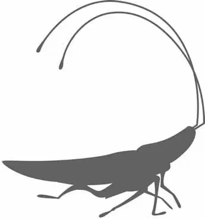

在断裂的高速公路立交桥上，瓦力的蟑螂仍然听话地等着，他的主人把他留在这里。
突然，一个红点出现在地面上。地面开始振动，一开始还算徐缓。小蟑螂抬头又望向天空。一个暗影越变越大，把太阳都遮住了。“功理”号这艘巨型飞船穿越云层下降，将整个区域笼罩在阴影中。
上百个红点奔腾而过。兴奋不已的蟑螂感知到他的主人很快就要回家，急切地追着红点跑。在它上方，造型优美、足有城市大小的星际飞船优雅地从天而降。
地面震颤了。堆成塔的垃圾翻滚而下，“功理”号降落着陆，终于回家了。
飞船侧面的一排巨型门滑了开来。每扇门前都伸出一道多用途舷梯通往地面。
船长第一个试探性地走出飞船。其他乘客站在舷梯的顶端，不愿意离开飞船。他们第一次望向飞船外面地球的天际线。
“我不认识这个。”一名乘客说道。
“我们不能继续留在飞船上吗？”另一名乘客说道。
人们变得紧张，一个个地向船长提出无数问题。“我们飞越八百万英里就是为了这个?”“他们可以把灯关掉吗？”“天气好像变暖和了。”
“至少这是干热。”有乘客指出。
然后伊芙出现了。她飞了出来，怀中紧抱着瓦力。残次品机器人跟在她后面。受到重创、缩成盒状的小小地球垃圾分装装置快要到家了。
伊芙在舷梯底部停顿了一下。
瓦力快活的小蟑螂看见了主人……意识到有什么不对劲。他冲上前来，跳上伊芙的背，一寸寸地靠近瓦力。
伊芙向着远处望去。她扫描了广阔的干涸海湾，找到了瓦力的废弃货车。她越快赶到瓦力的零部件那里，就能越早修复他。她飞上蓝天，快速地飞过海湾。地面上追随她的残次品机器人们在泥浆里跋涉，想跟却跟不上。
货车后门缓慢打开，瓦力放在搁板上的宝贝叮当作响。伊芙飞进去，让瓦力仰卧。她快速在旋转搁架中翻找，找到了瓦力的那批零配件。
她用一个锈迹斑斑的汽车千斤顶逐渐让瓦力被压扁了的身体伸展开来，然后一把抓住零配件。伊芙手忙脚乱地开始维修瓦力，火花四处飞溅。
最后，她给瓦力安装上一块新的太阳能电池板，举起爆破枪手臂，将货车的顶棚炸了一个洞。一束阳光穿透那个洞照耀着瓦力，伊芙屏住呼吸观察着。这些太阳光能给他所需要的能量吗？
仍然在努力追赶着伊芙的残次品机器人看见瓦力的货车上冒起爆炸的火光。飞船上的船长也看见了。但是他带着那株植物，继续朝前走着。当他走到舷梯底部的一块泥地上的时候，他跪下来开始挖洞。等他觉得这个洞足够深了，便轻轻将这株珍贵的植物放了进去，小心地将其茎部周围的泥土拍实。这只是一株小小的植物，但这是一个开始。
与此同时，残次品机器人仍在继续朝着瓦力的货车赶去。
在货车里，伊芙等待着。一开始，什么都没有发生。然后，她隐约听到了一声“嘟”，然后又是一声。瓦力的脑袋慢慢从他的盒子里探了出来，他的大眼睛眨了眨睁开了。蟑螂上下跳跃。他的机器人主人活过来了！
伊芙看着瓦力，向他伸出了一只手。
“瓦力。”她“嗡嗡”地柔声说道。
但是瓦力没有回应。他茫然地盯着她。伊芙指着自己说：“伊芙，伊芙。”瓦力看了她一会儿，然后把头转开了。
不应该是这样的！伊芙试图给瓦力看一些他最喜欢的收藏品，但他看起来并不喜欢。他只是想把它们像垃圾一样收集起来并压缩成方块。他变成了另一个执行指令的地球垃圾分装装置。
“不！”伊芙叫道。她看着他驶出去，又沮丧又愤怒。在经历了所有这一切之后，在瓦力做了这么多之后……他怎么可以就此消失，只留下以前的躯壳？这不公平。
伊芙伤心地跟着他走了出去，把头靠在了他的头上。她闭上眼睛，因为爱——生命中唯一的真正火花——已经离开了他的机器人心脏而悲痛。
伊芙握着瓦力的手——唯一他之前真正想要她做的事情——的时候，两人的脑袋间闪过一道能量的火花——一个机器人的亲吻。
伊芙感到瓦力的手扭动了一下。她看着他的眼睛，看见它们恢复了一些光彩。他的眼睛开始聚焦。他的手更紧地握住了她的。
她看见真正的瓦力的眼睛眨呀眨地恢复了活力。
“伊——娃？”他说道，眼睛越瞪越大。
“瓦力！”她大叫道。残次品机器人终于到了，现在他们在欢呼。蟑螂则快活地“吱吱”叫。
伴随着瓦力的货车里传出的他最喜欢的那首歌，他和伊芙之间又触发了一道微小的电弧。瓦力的幸福时刻终于到来了。他握着伊芙的手，感受到了她在轻捏他的手作为回应。
